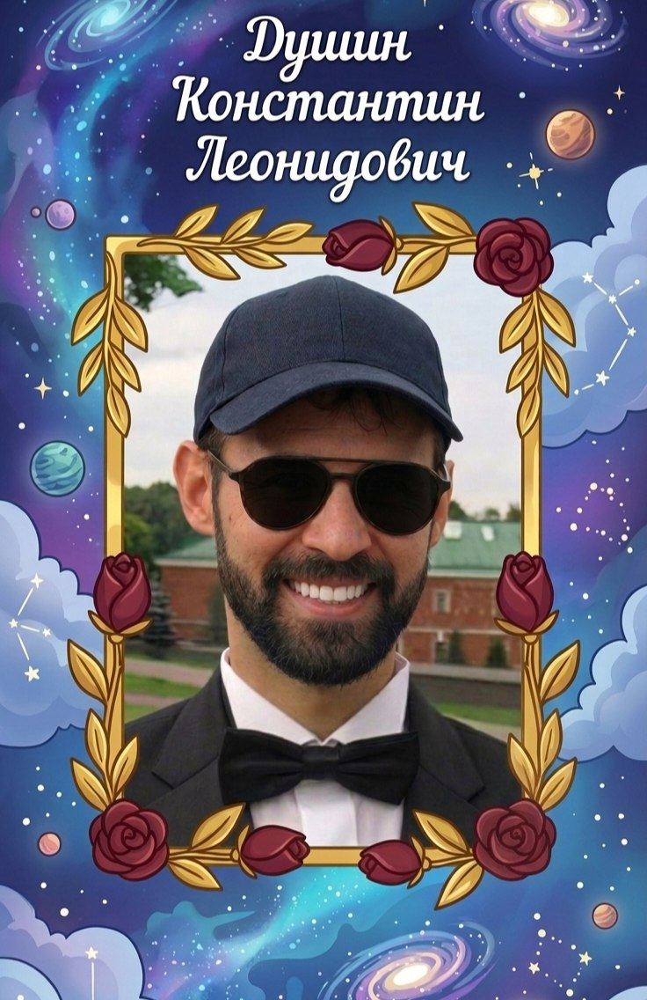

Глава семьи • Папа

Родился: 21 мая 1973 года
Сын Леонида Георгиевича Душина и Татьяны Александровны Чаплыгиной. Именно в его лице соединились две важные ветви нашего рода, дав начало новой главе истории Душиных.
Отец троих сыновей, хранитель фамилии и человек, объединивший в себе наследие Душиных и Чаплыгиных.